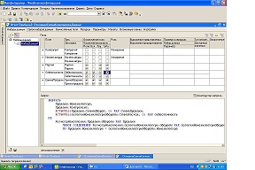

- Инструменты 1С 8.0
- для 1С:Бухгалтерии
- для 1С:ЗУП
- для 1С:УПП
- универсальные
- Статьи
|
Список инструментов универсальные
- Удаление элементов справочника
- Удаление записей регистра сведений
- Редактирование регистра сведений
- Измерение реквизита справочника (управляемая форма)
- Изменение реквизита документа (управляемая форма)
- Непосредственное удаление объектов
Список инструментов для 1С:Бухгалтерии
- Перенос остатков на счетах из 7.7
- Перенос остатков на счетах из УПП
- Восстановление последовательности документов складского учета
- Восстановление последовательности документов по взаиморасчетам с контрагентами
Список инструментов для 1С:ЗУП
- Дополнительное соглашение в формате Word
- Трудовой договор в формате Word
- Отпуск и стаж по сотрудникам
- Анализ начисленных налогов и взносов
Список инструментов для 1С:УПП
- Загрузка цен
- Остатки ТМЦ на складах
- Прибыли и убытки
- Почтовая рассылка
- Проверка документов
Статьи
- Схема компоновки данных
- Расшифровки СКД
- Регламентные задания (создание и запуск)
- Использование ЛКС и шаблоны
- Отладка запроса с временными таблицами
Причины использования инструментов 1С
В своей работе каждый программист часто сталкивается с необходимостью произвести изменения в объектах базы данных. Для профессионального специалиста не составит труда написать небольшую одноразовую программу для такого рода изменений. При этом он вряд ли озаботится ее универсальностью и удобством использования в части поисковых функций или ввода данных. На это нужно время, а проработка этих моментов требует внимания. Для начинающих программистов и тех, кто занят и не имеет времени для написания подобных обработок, на этом сайте предлагается решить эту проблему путем создания списка, или библиотеки, универсальных программ для наиболее часто встречающихся изменений в объектах базы данных.
Наработки, представленные на сайте для типовых конфигураций 1С: Бухгалтерия, ЗУП и УПП, - являются часто востребованным функционалом в учетных структурах любого предприятия, но отсутствует в типовых конфигурациях.
Сфера применения инструментов 1С
Работая программистом 1С в ряде организаций, я заметила, что бухгалтерам и управленцам в самых разных отраслях требуются одни и те же доработки. Например, получение трудового договора в формате Word из программы ЗУП.
В своей работе каждый программист часто сталкивается с необходимостью произвести изменения в объектах базы данных. Для профессионального специалиста не составит труда написать небольшую одноразовую программу для такого рода изменений. При этом он вряд ли озаботится ее универсальностью и удобством использования в части поисковых функций или ввода данных. На это нужно время, а проработка этих моментов требует внимания. Для начинающих программистов и тех, кто занят и не имеет времени для написания подобных обработок, на этом сайте предлагается решить эту проблему путем создания списка, или библиотеки, универсальных программ для наиболее часто встречающихся изменений в объектах базы данных.
Наработки, представленные на сайте для типовых конфигураций 1С: Бухгалтерия, ЗУП и УПП, - являются часто востребованным функционалом в учетных структурах любого предприятия, но отсутствует в типовых конфигурациях.
Работая программистом 1С в ряде организаций, я заметила, что бухгалтерам и управленцам в самых разных отраслях требуются одни и те же доработки. Например, получение трудового договора в формате Word из программы ЗУП.
В своей работе каждый программист часто сталкивается с необходимостью произвести изменения в объектах базы данных. Для профессионального специалиста не составит труда написать небольшую одноразовую программу для такого рода изменений. При этом он вряд ли озаботится ее универсальностью и удобством использования в части поисковых функций или ввода данных. На это нужно время, а проработка этих моментов требует внимания. Для начинающих программистов и тех, кто занят и не имеет времени для написания подобных обработок, на этом сайте предлагается решить эту проблему путем создания списка, или библиотеки, универсальных программ для наиболее часто встречающихся изменений в объектах базы данных.
Обратная связь
Наработки, представленные на сайте для типовых конфигураций 1С: Бухгалтерия, ЗУП и УПП, - являются часто востребованным функционалом в учетных структурах любого предприятия, но отсутствует в типовых конфигурациях.
Работая программистом 1С в ряде организаций, я заметила, что бухгалтерам и управленцам в самых разных отраслях требуются одни и те же доработки. Например, получение трудового договора в формате Word из программы ЗУП.
В своей работе каждый программист часто сталкивается с необходимостью произвести изменения в объектах базы данных. Для профессионального специалиста не составит труда написать небольшую одноразовую программу для такого рода изменений. При этом он вряд ли озаботится ее универсальностью и удобством использования в части поисковых функций или ввода данных. На это нужно время, а проработка этих моментов требует внимания. Для начинающих программистов и тех, кто занят и не имеет времени для написания подобных обработок, на этом сайте предлагается решить эту проблему путем создания списка, или библиотеки, универсальных программ для наиболее часто встречающихся изменений в объектах базы данных.
Наработки, представленные на сайте для типовых конфигураций 1С: Бухгалтерия, ЗУП и УПП, - являются часто востребованным функционалом в учетных структурах любого предприятия, но отсутствует в типовых конфигурациях.
Работая программистом 1С в ряде организаций, я заметила, что бухгалтерам и управленцам в самых разных отраслях требуются одни и те же доработки. Например, получение трудового договора в формате Word из программы ЗУП.
Статья об ЛКС
v8: Методика переопределения и вызова обработчиков событий формы
Каждый из нас хотя бы раз задумывался над тем, как было бы удобно, если бы мы могли переопределять обработчики событий формы, сохраняя возможность вызова старого обработчика независимо от его имени. В этой статье изложен метод, который позволяет реализовать эту возможность. Автор статьи: TormozIT | Редакторы: Гений 1С
Последняя редакция №112 от 24.06.07 | История
Думаю, что описанная методика заслуживает платформенной реализации.
Схема компоновки данных
Может быть открыта для каждого отчета кнопкой «Схема компоновки данных».
Нажав ее, получим таблицу:
Наборы данных
Для составления отчета путем компоновки данных достаточно заполнить закладку Наборы данных. Для этого на словах «Наборы данных» в левом окне ПКМ и выбрать из:
Добавить набор данных – запрос
Добавить набор данных – объект
Добавить набор данных – объединение
Набор данных – объединение позволяет установить между наборами данных связь объединением (вывод всех записей из всех наборов). Наборы данных для объединения должны быть подчинены Набору данных-объединение. Например, сгруппированные по номенклатуре данные о поступлении и расходе для получения полной информации должны быть объединены, тогда будут выведены в отчет и данные, по которым нет расхода, а есть только приход и наоборот.
Если нужна левая связь, то нужно воспользоваться закладкой Связи наборов данных.
Набор данных – объект дает возможность получить данные для формирования отчета из внешнего источника (например, таблицы значений). Таблица значений создается и заполняется в программном модуле, а потом инициализируется в схему компоновки. Допустим, макет со схемой компоновки, которая в качестве источника данных использует ТЗ, называется «Продажи»:
-- некий запрос --
ТЗ=Запрос.Выполнить().Выгрузить();
ВнешниеНаборыДанных=Новый Структура;
ВнешниеНаборыДанных.Вставить(«Продажи»,ТЗ);
СхемаКомпоновкиДанных=ПолучитьМакет(«Продажи»);
Настройки= СхемаКомпоновкиДанных.НастройкиПоУмолчанию;
КомпоновщикМакета=Новый КомпоновщикМакетаКомпоновкиДанных;
МакетКомпоновки= КомпоновщикМакета.Выполнить(СхемаКомпоновкиДанных, Настройки);
ПроцессорКомпоновкиДанных=Новый ПроцессорКомпоновкиДанных;
ПроцессорКомпоновкиДанных.Инициализировать(МакетКомпоновки, ВнешниеНаборыДанных);
ДокументРезультат=Новый ТабличныйДокумент;
ПроцессорВывода=Новый ПроцессорВыводаРезультатаКомпоновкиДанныхВТабличныйДокумент;
ПроцессорВывода.УстановитьДокумент(ДокументРезультат);
ПроцессорВывода.Вывести(ПроцессорКомпоновкиДанных);
ДокументРезультат.ОтображатьСетку=Ложь;
ДокументРезультат.ОтображатьЗаголовки=Ложь;
ДокументРезультат.Показать();
Для отображение в форме отчета параметров, отбора, оформления, выбора выводимых полей и сортировки необходимо разместить в форме табличные поля с данными сответственно ОтчетОбъект.КомпоновщикНастроек.Настройки.ПараметрыДанных, ОтчетОбъект.КомпоновщикНастроек.Настройки.Отбор, ОтчетОбъект.КомпоновщикНастроек.Настройки.УсловноеОформление, ОтчетОбъект.КомпоновщикНастроек.Настройки.Выбор, ОтчетОбъект.КомпоновщикНастроек.Настройки.Порядок.
|
|